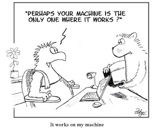
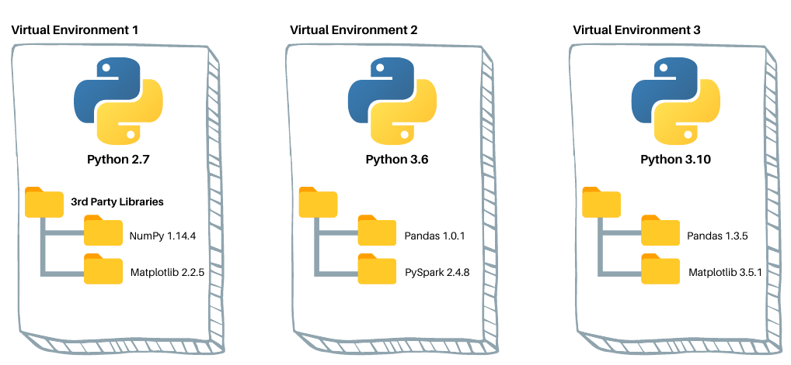
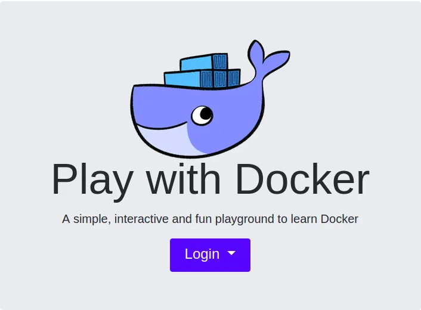
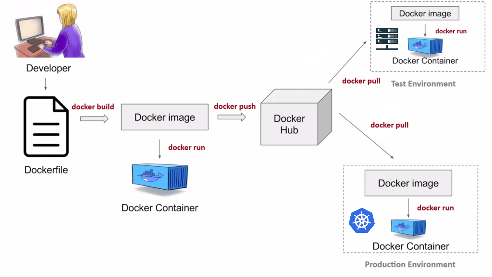
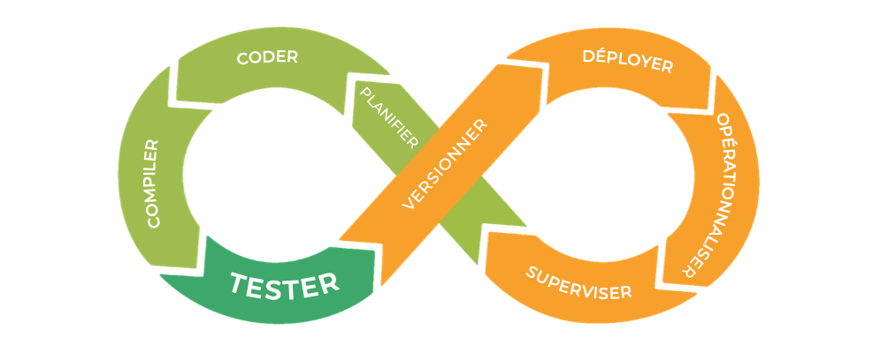
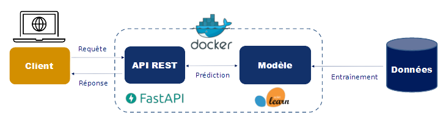
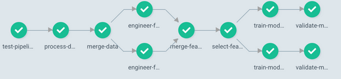

Mise en production des projets de data science
ENSAE 3A - 2023/2024
Introduction
Contexte
- Qui sommes-nous ?
- des data scientists de l’Insee
- frustrés par l’approche souvent purement technique de la data science
- convaincus que les bonnes pratiques valent à être enseignées
- ,
Qu’est ce qu’un data scientist ?

Tendance à la spécialisation : data analyst, data engineer, ML Engineer…
Rôle d’interface entre métier et équipes techniques
- Compétences mixtes : savoir métier, modélisation, IT
La notion de mise en production
- Mettre en production : faire vivre une application dans l’espace de ses utilisateurs
- Notion simple mais mise en oeuvre compliquée !
- Dépasser le stade de l’expérimentation
- Comprendre les besoins des utilisateurs
- Bonnes pratiques de développement
- Techniques informatiques d’industrialisation
La notion de bonnes pratiques
Origine : communauté des développeurs logiciels
Constats :
- le “code est plus souvent lu qu’écrit” (Guido Van Rossum)
- la maintenance d’un code est très coûteuse
Conséquence : un ensemble de règles informelles, conventionnellement acceptées comme produisant des logiciels fiables, évolutifs et maintenables
Pourquoi s’intéresser aux bonnes pratiques ?
L’activité du datascientist tend à se rapprocher de celle du développeur :
projets intenses en code
projets collaboratifs et de grande envergure
complexification des données et des infrastructures
déploiement d’applications pour valoriser les modèles
Contenu du cours
- Pré-requis
- Introduction au terminal
Linux - Contrôle de version avec
Git
- Introduction au terminal
- Bonnes pratiques de développement
- Travail collaboratif avec
Git - Qualité du code
- Structure des projets
- Traitement des données volumineuses
- Travail collaboratif avec
- Mise en production
- Maximiser la portabilité
- Déployer et valoriser un projet de data science
- MLOps
Site web du cours
Tout le contenu du cours est en open-source
- GitHub
- Pull Requests -> bonus
Modalités pédagogiques
- Apprentissage par la pratique
- Application : industrialisation d’un projet de ML
- Langage :
Python- Langage dominant dans le monde de la donnée
- Les principes présentés sont agnostiques au langage
- Environnement d’exécution : SSP Cloud
- Environnement de développement normalisé
- Véritable environnement de production
- Acquisition des bonnes pratiques
Evaluation
- Objectif : mise en pratique réaliste des notions étudiées
- Problématique métier
- Données réelles
- Evaluation en deux parties :
- En groupe : projet à construire selon 3 “parcours”
- Individuel : revue de code d’un autre projet
Le travail collaboratif avec Git
Pourquoi utiliser Git ?

Concepts essentiels

Bonnes pratiques
Que versionne-t-on ?
- Essentiellement du code source
- Pas d’outputs (fichiers
.html,.pdf, modèles…) - Pas de données, d’informations locales ou sensibles
Note
Pour définir des règles qui évitent de committer tel ou tel fichier, on utilise un fichier nommé .gitignore.
Si on mélange du code et des éléments annexes (output, données…) dans un même dossier, il faut consacrer du temps à ce fichier.
Le site gitignore.io peut vous fournir des modèles.
N’hésitez pas à y ajouter des règles conservatrices (par exemple *.csv), comme cela est expliqué dans la documentation utilitR.
Bonnes pratiques
Format des commits
- Fréquence
- Aussi souvent que possible
- Le lot de modifications doit “faire sens”
- Messages
- Courts et informatifs (comme un titre de mail)
- Décrire le pourquoi plutôt que le comment dans le texte

Outils pour le travail collaboratif
- L’éco-système
Gitfacilite le travail collaboratifGit: modèle des branchesGitHub/GitLab: Issues, Pull Requests, Forks
Le modèle des branches

Les outils de contribution
Issue : soumettre un problème ou une suggestion aux développeurs d’un projet
Pull Request : proposer aux développeurs d’un projet d’intégrer des modifications
Fork : faire la copie d’un projet existant dans son espace personnel
- Indispensable pour faire une pull request à un dépôt sur lequel on n’a pas les droits
Une organisation courante : le GitHub flow

Description plus détaillée : ici
Qualité du code
Enjeux
D’une vision utilitariste du code à une vision du code comme outil de communication
Favoriser la lisibilité et la maintenabilité
Faciliter la réutilisation
Principes généraux
Adopter les standards communautaires
Utiliser des fonctions
(Auto-)documenter son code
1️⃣ Standards communautaires
“Good coding style is like correct punctuation: you can manage without it, butitsuremakesthingseasiertoread”
1️⃣ Standards communautaires - Outils
- Linters : diagnostic de qualité du code
- Formatters : application automatique des standards
Astuce
- Exemples d’erreurs repérées par un linter :
- lignes de code trop longues ou mal indentées, parenthèses non équilibrées, noms de fonctions mal construits…
- Exemples d’erreurs non repérées par un linter :
- fonctions mal utilisées, arguments mal spécifiés, structure du code incohérente, code insuffisamment documenté…
2️⃣ Utiliser des fonctions
Règle d’or
Il faut utiliser une fonction dès qu’on utilise une même portion de code plus de deux fois (don’t repeat yourself (DRY))
- Limite les risques d’erreurs liés aux copier/coller
- Rend le code plus lisible et plus compact
- Un seul endroit du code à modifier lorsqu’on souhaite modifier le traitement
- Facilite la réutilisation et la documentation du code !
Règles pour écrire des fonctions pertinentes
- Une tâche = une fonction
- Une tâche complexe = un enchaînement de fonctions réalisant chacune une tâche simple
- Limiter l’utilisation de variables globales.
3️⃣ Documenter son code
Documenter le pourquoi plutôt que le comment
Privilégier l’auto-documentation via des nommages pertinents
Comment bien documenter un script ?
- Minimum 🚦 : décrire ce que le code fait au début du script
- Bien 👍 : commenter les parties “délicates” du code
- Idéal 💪 : documenter ses fonctions avec des docstrings
Structure des projets
Enjeux
Favoriser la lisibilité et la maintenabilité
Enjeux spécifiques à la data science
- Expérimentation
- Non-linéarité
- Reproductibilité
Principes généraux
Favoriser une structure modulaire selon l’état du projet
- Exploration : travail à partir de notebooks
- Industrialisation : adopter une structure type package
Adopter les standards communautaires
(Auto-)documenter son projet
1️⃣ Phase d’exploration : notebooks
- Avantages
- Interactivité : idéal pour l’expérimentation
- Communication : diffusion de résultats sous forme exécutable
- Inconvénients
- Reproductibilité généralement limitée
- Pas adaptés pour l’automatisation
- Mal gérés par le contrôle de version
2️⃣ Industrialisation : structure modulaire
Premier niveau : structuration du code
Adopter une structure type package
- Des fonctions rangées dans des modules
- Un script principal (
main) orchestre les traitements - Utilisation de chemins relatifs uniquement
2️⃣ Industrialisation : structure modulaire
- Deuxième niveau : structuration du projet

3️⃣ Adopter les standards communautaires
- Templates de projets : Cookiecutters
- La cohérence intra-projet doit toujours primer
4️⃣ Documenter son projet
- Favoriser l’auto-documentation via des nommages pertinents
L’auto-documentation : illustration
├── report.ipynb
├── correlation.png
├── data.csv
├── data2.csv
├── fig1.png
├── figure 2 (copy).png
├── report.pdf
├── partial data.csv
├── script.py
└── script_final.py- Difficile de rentrer dans le projet…
- Tout au même niveau
- Titres non informatifs
L’auto-documentation : illustration
├── data
│ ├── raw
│ │ ├── data.csv
│ │ └── data2.csv
│ └── interim
│ └── partial data.csv
├── notebooks
│ └── report.ipynb
├── src
| ├── script.py
│ └── script_final.py
└── reports
├── report.pdf
└── figures
├── fig1.png
├── figure 2 (copy).png
├── figure10.png
└── correlation.png- Une structure déjà plus lisible !
- Les titres restent non informatifs
L’auto-documentation : illustration
├── data
│ ├── raw
│ │ ├── dpe_logement_202103.csv
│ │ └── dpe_logement_202003.csv
│ └── interim
│ └── dpe_logement_merged_preprocessed.csv
├── notebooks
│ └── report.ipynb
├── src
| ├── main.R
| ├── preprocessing.R
│ └── generate_plots.R
└── reports
├── report.pdf
└── figures
├── histogram_energy_diagnostic.png
├── barplot_consumption_pcs.png
├── correlation_matrix.png
└── correlation.png- Une structure auto-documentée
- On comprend le projet sans même lire le code
4️⃣ Documenter son projet
Favoriser l’auto-documentation via des nommages pertinents
Inclure un fichier
README.mdà la racine du projet- Carte d’identité et vitrine du projet
- Présente le contexte et le fonctionnement du projet
Si open-source : inclure une licence
Application
Bonnes pratiques de développement
- Consignes sur le site du cours
- Partie 0️⃣ : initialisation de l’environnement et du projet
- Partie 1️⃣ : qualité du code
- Partie 2️⃣ : adoption d’une structure modulaire
Traitement des données volumineuses
Enjeux
- Massification des données

Choisir des technologies adaptées
1️⃣ Infrastructure
2️⃣ Formats de données
3️⃣ Frameworks de traitement de données
1️⃣ Le data lake
- Un stockage peu coûteux fait pour des données
- Volumineuses
- Brutes
- Issues de sources variées

1️⃣ Le stockage objet
- Standard des data lakes dans le cloud

2️⃣ Formats de données
- Le choix d’un format de données répond à un arbitrage entre plusieurs critères :
- Public cible
- Finalité (traitement, analyse, diffusion)
- Volumétrie
- Interopérabilité
2️⃣ Limites des formats usuels
- Les formats usuels (
CSV,JSON,XML) sont utiles pour :- Le traitement de faibles volumes de données
- La diffusion de données
- Limités pour le traitement de données volumineuses
- Non-compressés : espace disque élevé
- Orientés ligne : peu adaptés aux traitements analytiques
2️⃣ Orientation ligne vs. orientation colonne

2️⃣ Parquet : propriétés
- Orienté colonne
- Adapté aux traitements analytiques
- Conçu pour être écrit une fois mais lu fréquemment
- Optimisé
- Compression (jusqu’à 87 % moins d’espace qu’un CSV)
- Lecture du fichier (jusqu’à 34x plus rapide qu’un CSV)
- Interopérable
- Gestion native des méta-données
2️⃣ Parquet : partitionnement
- Division en blocs des données selon un critère
- Optimise la lecture pour certaines queries

3️⃣ Traitement in-memory
Parquetne résout pas tout- L’espace disque est optimisé
- Les données décompressées doivent passer en RAM
3️⃣ Frameworks de traitement in-memory
Portabilité
“It works… on my machine”
On a construit un projet lisible, structuré et versionné
Peut-on partager notre projet ?
- En théorie, oui !
- En pratique, c’est toujours plus compliqué…

Le critère de la portabilité
- Un code ne vit jamais dans une bulle isolée, il contient en général de nombreuses adhérences
- Des dépendances
- Des librairies système
- Un code est portable s’il peut être exécuté dans un environnement différent que celui du développement
Limites du mode de travail usuel
- Workflow classique
- Installer une distribution de
Pythonsur son poste - Développer un projet en installant les packages nécessaires
- Passer au projet suivant et ainsi de suite
- Installer une distribution de
- Quels problèmes peuvent se poser ?
Limites du mode de travail usuel
Conflits de version : différents projets peuvent requérir des versions différentes d’un même package
Version de
Pythonfixe, celle de l’installation systèmeReproductibilité limitée : difficile de dire quel projet nécessite quel package
Portabilité limitée : difficile de fixer dans un fichier les dépendances spécifiques à un projet
Environnements virtuels : fonctionnement
- Dossier auto-suffisant qui :
- contient un intepréteur
Pythonet des packages - est isolé des autres environnements existants
- contient un intepréteur

Environnements virtuels : implémentations
Implémentation standard : venv
Une implémentation populaire en data science : conda
- Également un package manager (comme pip, mais multi-langages)
D’autres implémentations existent : virtualenv, pyenv…
venv : utilisation
venvfait partie de la librairie standard dePythonUtilisation basique (sous
Linux)- Créer un environnement :
python -m venv myenv - Activer l’environnement :
source myenv/bin/activate - Installer des packages :
pip install scikit-learn - Quitter l’environnement :
deactivate
- Créer un environnement :
Spécifier les dépendances
- Développer dans un environnement virtuel favorise :
- la reproductibilité : fixer les packages utilisés et leurs versions
- la portabilité : distribuer ces spécifications
- Convention : fichier
requirements.txtà la racine du projet (à commit !)- Génération :
pip freeze > requirements.txt - Installation :
pip install -r requirements.txt
- Génération :
Le fichier requirements.txt
- Arbitrage à trouver entre :
- Reproductibilité : spécifier finement les versions
- Sécurité : laisser les versions évoluer
Environnements virtuels : limites
- Reproductibilité :
- Version de
Pythonnon-gérée - Librairies système non-gérées
- Version de
- Peu adaptés aux environnements de production :
- Reproductibilité limitée -> portabilité limitée
- Lourdeur de gestion des environnements
Le gold-standard de la portabilité
- Idée : au lieu de distribuer la recette pour recréer la bonne machine, peut-on distribuer directement la bonne machine ?
- On ne peut pas distribuer des machines physiques
- Les machines virtuelles sont coûteuses à redistribuer
- Les conteneurs offrent le compromis idéal
Conteneurs vs. machines virtuelles

Source : docker.com
Conteneurs : implémentations
- Plusieurs implémentations des conteneurs
Dockerest largement prédominant

Docker : installation
Docker: outil en ligne de commande (CLI)- Instructions selon le système d’exploitation
- Environnement “bac à sable” : Play with Docker

Le Dockerfile
- Exemple : conteneurisation d’une API avec FastAPI
# Image Docker de base
FROM python:3.11
# Définition du répertoire de travail
WORKDIR /code
# Copie des fichiers nécessaires sur l'image
COPY requirements.txt /code/requirements.txt
# Installation des dépendances
RUN pip install --no-cache-dir --upgrade -r /code/requirements.txt && \
python -m spacy download en_core_web_sm
COPY app/ code/app
# Commande lancée par l'image au runtime
CMD ["uvicorn", "app.main:app", "--host", "0.0.0.0", "--port", "80", "--proxy-headers"]Docker : fonctionnement
Source : k21academy.com
Docker en pratique
- Présentation détaillée sur la page du cours
- Concepts (caching, buildtime/runtime)
- Commandes essentielles
- Application à un exemple concret
Application
Portabilité du projet
- Consignes sur le site du cours
- Partie 3️⃣ : construction d’un projet portable et reproductible
- Construire un environnement virtuel pour le projet
- Conteneuriser l’application avec
Docker
- Partie 3️⃣ : construction d’un projet portable et reproductible
Valorisation et déploiement
Motivation
La massification et la diversification des données apportent de nombreux changements
- Le Data Lake
- Le Data Lab
- De nouveaux profils : Data Scientist, Data Engineer, Data Architect
La majorité des projets de data science ne sont pas déployés
Besoin d’industrialisation qui nécessite de nouveaux outils
L’approche DevOps
Idée : unifier le développement (dev) et l’administration système (ops)
But : raccourcir le temps de développement en déployant en continu tout en maintenant la qualité

DevOps, DataOps, MLOps ?
Le DevOps n’intègre pas les spécificités liées à la data science
DataOps : déploiement et maintenance de pipelines de données
MLOps : déploiement et maintenance de modèles de Machine Learning
Les bonnes pratiques favorisent la collaboration et facilitent les déploiements
La mise en production
On a construit un projet de data science reproductible et conforme aux standards des bonnes pratiques
Pour valoriser le projet, il faut le déployer dans un environnement en lien avec les utilisateurs
- Quel est le format adapté pour le valoriser ?
- Quelle infrastructure de production ?
- Comment automatiser le processus de déploiement ?
Format de valorisation
- Critères à prendre en compte :
- Quels sont les utilisateurs potentiels ?
- Seulement de la mise à disposition, ou besoin d’interactivité ?
- Spécificités ML : entraînement en batch ou online ?
- Besoin de scalabilité ?
- Formats usuels : API, application web, dashboard, site internet, rapport automatisé…
Exposer un modèle via une API REST
API : interface entre l’utilisateur (client) et le modèle entraîné
API REST : permet de requêter le modèle avec une syntaxe simple (HTTP) et de manière scalable

Environnement de production
Dépend essentiellement de l’infrastructure à disposition
Un orchestrateur de conteneurs répond à plusieurs besoins :
- Adapter les ressources (scaler) selon les besoins
- Monitoring de l’état de santé des applications
- Déploiements reproductibles et automatisés

Fonctionnement de Kubernetes

L’approche CI/CD : principes
Intégration continue (CI) : à chaque modification du code source, l’application est automatiquement tested, built and released
Déploiement continu (CD) : les nouvelles releases sont automatiquement déployées
GitOps : le processus est décrit sous formes de manifestes, stockés sur un dépôt
Git
L’approche CI/CD : exemple

Pipeline complet
Les données d’entrée ne sont pas fixes, il faut les intégrer dans un pipeline complet de données
La représentation est faite sous forme de graphes acycliques dirigés (DAG)

Conclusion
- On a construit un pipeline reproductible, automatisé et scalable
MLOps
Bonnes pratiques pour la mise en production des projets de data science
Comment favoriser la portabilité ?